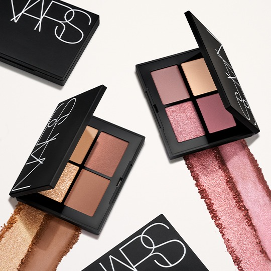
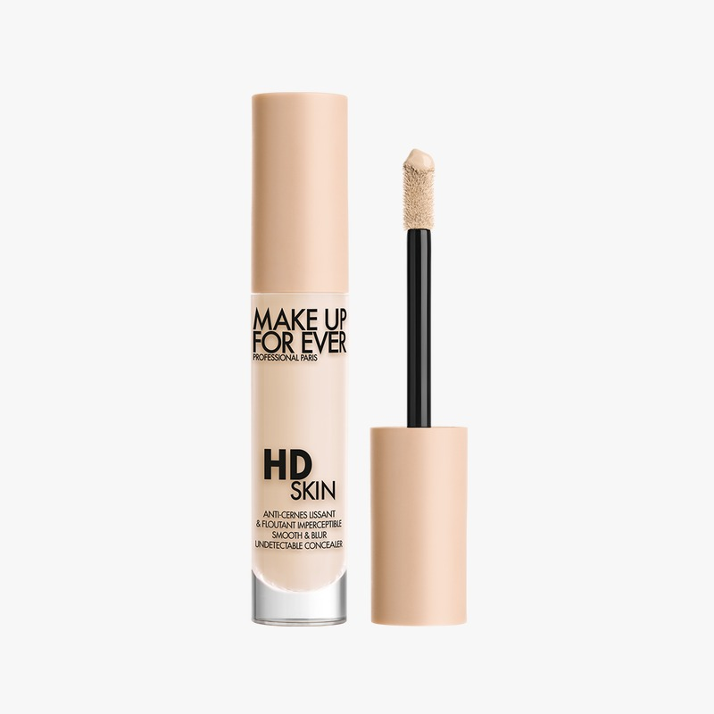
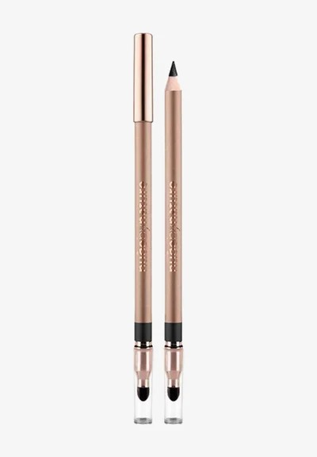
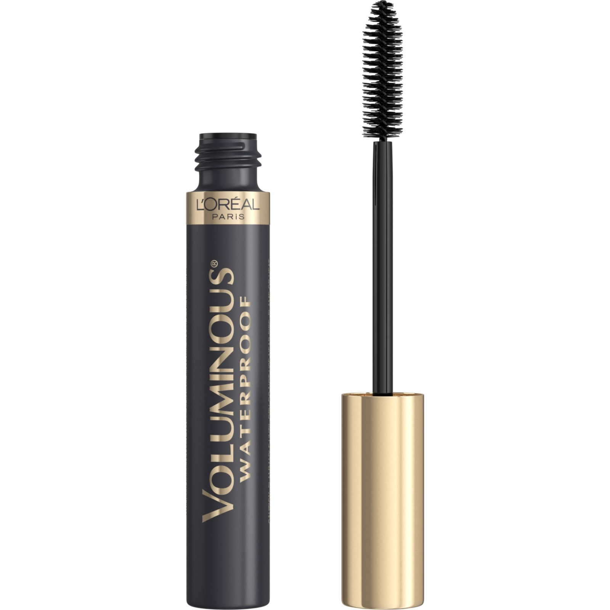
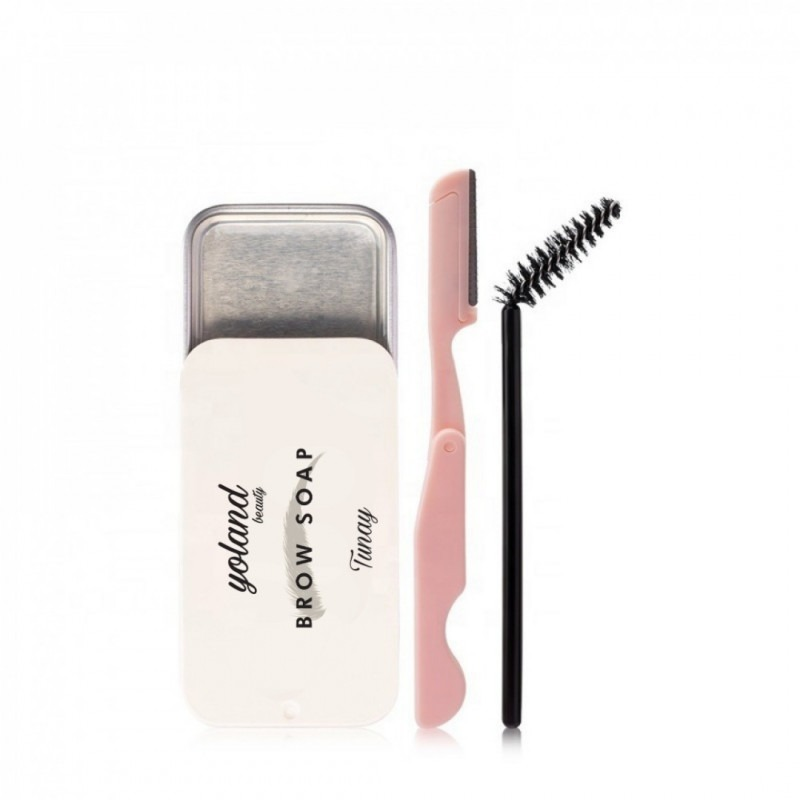

Eyeshadow is used to enhance the beauty of the eyes
define their shape, and add a beautiful touch to makeup.

Concealer is used to hide dark circles, blemishes
and skin imperfections, and to even out the skin tone.

Eyeliner is used to define the eyes
make them look bigger or sharper, and enhance the overall makeup look.

Mascara is used to lengthen, thicken
and define the eyelashes, making the eyes look more attractive.

Brow gel is used to set and shape eyebrow hairs
keeping them neat, defined, and in place for a long-lasting natural look.
